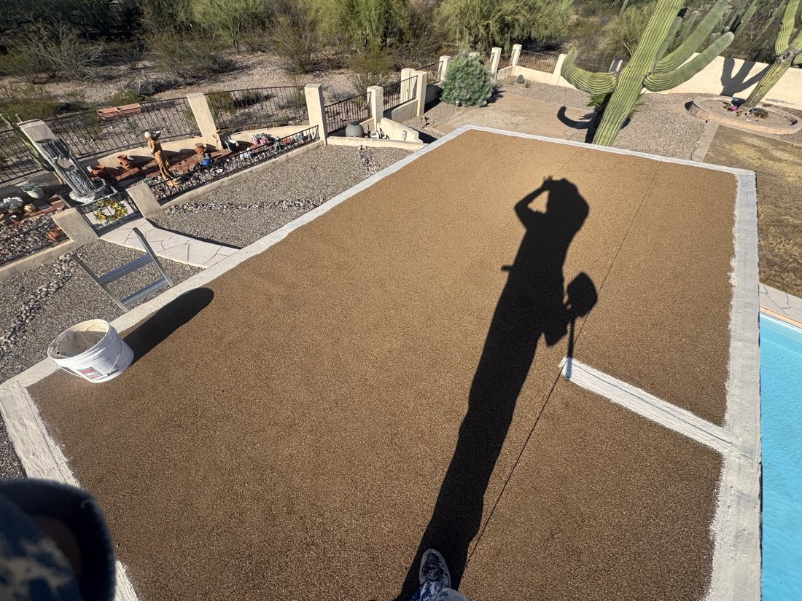

Modified bitumen is a roofing membrane system commonly used on low-slope and flat roofs — a different approach from a liquid-applied roof coating. Here's how the system works, and how we approach inspection, repair, and installation.
Modified bitumen is an asphalt-based roofing membrane reinforced with a rubber or plastic polymer, which makes it more flexible and durable than traditional built-up asphalt roofing. It's manufactured and installed in rolled sheets rather than applied as a liquid — a different kind of roofing system than a coating.
Modified bitumen is a primary roofing material — it forms the waterproofing layer itself, rather than being applied over an existing roof surface the way a coating is.
These systems are commonly associated with low-slope and flat-roof applications. Suitability for a specific roof still depends on the roof's structure, deck, and design — not every roof is a fit for every system.
A modified bitumen roof is a layered assembly, generally including a base sheet and a granulated cap sheet, with detailing at seams, edges, and penetrations. See how the system works below.
At a general level, a modified bitumen roof is built from layered sheet materials, detailed carefully at seams and penetrations so the roof sheds water as one continuous system.
The base layer is installed over the prepared roof deck or existing substrate, providing the foundation the rest of the system is built on.
The outer, or "cap," sheet is the ply exposed to weather. It's typically finished with mineral granules, which help protect the membrane below from UV exposure and everyday wear.
Where sheets meet, seams and laps have to be properly sealed — this is one of the most important details in a modified bitumen system, since seams are a common place for problems to start if not installed correctly.
Roof edges, vents, HVAC curbs, and other penetrations need dedicated flashing and detailing. Where a flat roof meets a parapet wall, that roof-to-wall transition needs its own careful detailing — see our Parapet Roofing & Repairs page for more on that specific detail work.
Modified bitumen membranes can be installed a few different ways, including torch-applied, self-adhered, cold-adhesive, hot-mopped asphalt, or mechanically attached methods. The appropriate method for a given roof depends on the specific system, deck type, manufacturer requirements, and site conditions.
Like any low-slope roofing system, how water moves off the roof matters. We look at drainage as part of any inspection, since standing water can affect the long-term performance of the system.
These terms get used loosely, but they describe two different roofing approaches. Which one makes sense for your roof depends on your existing roof type, its condition, drainage, age, and your project goals — one option isn't automatically the right answer for every roof.
A roofing membrane system in its own right — installed as layered sheet material that forms the roof's primary waterproofing layer, from the deck up.
A liquid-applied product installed over an existing, appropriate roof substrate as a maintenance or restoration layer — not a standalone roofing system on its own. See our Roof Coatings page for how that process works.
The right scope of work depends on the specifics of your roof — we don't default to recommending a full replacement. An inspection is the only reliable way to determine which makes sense for your situation.
Damage is limited and localized — for example, an isolated seam failure, a punctured area, or a flashing detail that's failed — and the rest of the roofing assembly and deck are in sound condition.
The roof shows widespread deterioration, repeated or recurring leaks, extensive seam or lap failures, significant granule loss, deck or substrate damage, or a history of prior repairs that haven't resolved the underlying problem.
Age, condition, extent of deterioration, drainage, and the roof's history all factor in. We'll walk through what we find during your inspection so you understand the reasoning behind the recommendation.
Regular inspection can help catch small problems — a failing seam, a cracked penetration detail, early granule loss — before they turn into a larger repair or a leak inside the building.
Seam and lap condition, blistering or splitting, granule loss, flashing and penetration details, roof-edge and parapet transitions, and signs of ponding water.
Tucson's UV exposure, summer heat, and monsoon storms all put stress on a low-slope roof over time. Catching wear early is generally easier and less disruptive than addressing an active leak.
Service life varies with the roofing assembly, materials, installation quality, exposure, maintenance, and site conditions — we don't promise a specific number of years, but we can talk through what to reasonably expect for your roof during an inspection.
Whether it's a repair or a full section replacement, our process starts with inspection and preparation — not just laying material down.
We inspect the existing roof, deck, seams, flashing, and drainage to understand the current condition and the scope of work needed.
The work area is cleaned and prepared, and the substrate or deck is evaluated to confirm it's ready for the next step.
Any damaged decking, deteriorated material, or failed detailing is addressed before new material goes down.
The modified bitumen system is installed according to the manufacturer's requirements for that product and roof, with careful attention to seams, laps, flashing, and penetrations.
We walk the completed work to confirm seams, flashing, and details were installed correctly before calling the job done.
The job site is cleared of debris and old material so you're left with a clean, finished roof — not a cleanup project of your own.

Granulated Cap-Sheet Modified-Bitumen Roofing
No. Modified bitumen is a roofing membrane system installed as layered sheet material — it's the roof itself. A roof coating is a liquid-applied product installed over an existing, appropriate roof substrate as a maintenance or restoration layer. See our Roof Coatings page for more on that separate process.
It's the outer, exposed ply of a modified bitumen system, finished with mineral granules that help protect the membrane underneath from UV exposure and everyday wear.
Service life varies with the roofing assembly, materials, installation quality, exposure, maintenance, and site conditions. We can talk through what to reasonably expect for your specific roof as part of an inspection.
It depends on your existing roof type, its condition, drainage, and your goals for the project. An inspection is the most reliable way to determine which approach fits your roof — if you have a combination roof with a sloped shingle section too, our Shingle Roofing page covers that side of the job.
Not sure whether your low-slope roof calls for modified bitumen, a coating, or a repair? An inspection can help determine the right option for your specific roof.